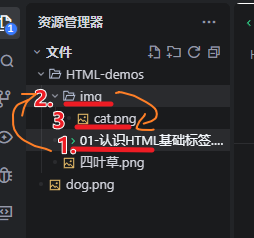
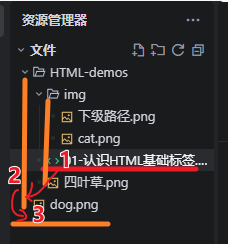

HTML 指的是超文本标记语言，标记语言是一套标记标签组成，HTML 用来描述网页。我们学习 HTML 其实本质就是学习 HTML 标签。
自动生成的 html 代码，通常包含文档类型声明、 html、head、body、meta、title 等标签，每个标签都有特定的功能。说明在 html 源代码的解释标签中。
并列关系（兄弟、姐妹）、嵌套关系（父子、母子）
嵌套关系：div>p>span。我是 div 标签的 p 标签中的 span 标签里的内容
标题的显示特点：自动加粗，每行只显示一个（每行只能放一个标题），不同级别标题，字体大小不同。
h1 的唯一性：每个文档只能有一个 h1 标题，只能使用一次一级标题 好 ，其他标题可以重复。用于：新闻的标题，网页的 logo 等。
标题的层次性：一般每个页面不超过三个级别的标题，不需要把所有级别的标题全部使用上。h2、h3 二级三级标题，可用于商品页面的产品分类、产品名，这一类比较重要的文字内容，突出它们的重要性。
标题的重要性：h1~h6 标题，h1 最重要，h6 最不重要。
这是一个段落 p
这是第二个段落 p
段落p 标签的特点：独占一行，每行只显示一个。多余一行的内容，会自动换行。
语义化 HTML：根据内容的结构和含义，使用合适的标签来描述内容。
语义化 HTML 的好处：清晰的代码结构、搜索引擎友好、可访问性好、更易读。
注释标签：给开发者看的，在 html 代码中，用于解释说明代码，调试时可注释掉一部分，逐个排除bug。
注释标签的特点： 被注释代码不显示在浏览器中，浏览器不解析，可多行注释。
快捷键：Ctrl + / 快速添加注释标签。
块级元素：独占一行，每个元素占一行，如段落 p、标题 h1~h6、列表项等。内部可嵌套其他元素。
注：段落标签 p：内部不要放其他块级元素，否则导致段落内容不连续，内部断开，一个段落看起来不像是一个段落了。段落内，主要放文字类标签，比如内联元素
内联元素：不独占一行，一行可以放多个内联元素，如文字、图片、链接 a等。不能嵌套块级元素，可以嵌套内联元素。
图片标签：img 标签用于在网页中插入图片。
图片标签的属性：
图片标签的使用：
属性：不分先后顺序，都可以写在开始标签中。键值对形式：属性名="属性值"。属性之间：空格隔开。

注：图片的路径可以是相对路径，也可以是绝对路径。
注：相对路径：从当前文件所在目录开始的路径，如 img/1.jpg。


注：图片的宽度和高度，是可选的，默认是图片的原始大小。只设置宽度或高度，图片会等比例缩放，所以一般只需要设置宽度或高度，即可。
图片的相对路径：图片相对于当前 html 文件所在的路径
同一目录（同级路径）：同一个文件夹里的文件。直接写文件名；或 当前文件夹：./文件名
从当前 html 文件的位置开始，在同一个文件夹里直接就能找到
下一级目录（下一级路径）：文件夹名/文件名；要找的文件所在的文件夹和 当前 html 文件在同一个目录下
img/cat.png：第一步，先从当前 html 文件的位置开始，找到同一个文件夹里的 img 文件夹。第二步：在该 img 文件夹下找到文件 cat.png。所以相对当前 html 文件而言，这个文件是在下一级路径里。

上一级目录（上一级路径）：../文件名；相当于找自己的父级目录里的文件；此时要找的文件，在当前 html 文件的上一级目录下。
../文件名：第一步，从当前 html 文件的位置开始，用../ 跳出当前文件所在目录，进入上一级目录；第二步，找到上一级目录下的文件 dog.png。相对于当前 html 文件而言，该文件是在上一级路径里。

大白话总结：
同级路径：找文件时，在当前 html 文件所在的“当前文件夹”里就能直接找到其他文件。
下一级路径：找文件时，在当前 html 文件所在的当前文件夹里找不到，还得打开“当前文件夹里的另一个文件夹”，才可能找到。
上一级路径：找文件时，在当前 html 文件所在的当前文件夹里找不到，必须“退出当前文件夹，返回到上一层文件夹”，才可能找到其他文件。
⑴ 本地路径（不要用）：从盘符开始，只能自己电脑上看，换电脑路径就失效，就看不了。如 C:\Users\Administrator\Desktop\01-认识HTML基础标签.html （本地路径默认反斜杠，斜杠也可以）
⑵ 网络路径：网络的绝对地址，换电脑也能找到，如 https://www.baidu.com/img/flexible/logo/pc/result.png
右击网络图片，或查看源代码，可以获取图片的网络地址
超链接标签：a 标签用于创建超链接，指向其他网页、文件、图片、页面内其他位置等。
超链接标签的属性：
内部链接的格式： href="网站内部的文件路径 url"
内部链接的演示：
跳转到文件：四叶草图片的位置。外部链接的格式：href="外部网站地址 url"
外部链接的演示：
跳转到百度空链接的作用：临时占位使用，后期可添加具体链接。点击链接后，不会跳转到其他页面，也不会执行任何操作。
空链接的演示：
空链接：href="#"href="#"：链接目标是“当前页面的顶部锚点”（# 是 ID 为空的锚点，默认指向“页面最顶端”）
点击后的效果：
点击后：“什么也不做”的链接，无任何效果。
下载链接的作用：点击链接后，会下载文件到本地。
下载链接的演示：
⑴ 无 download 属性，会跳转到图片，不会下载注：download="下载的文件名"：下载文件时，文件的保存名称，默认是文件名。
⑶ 如果文件是 .zip，.exe 等格式的文件，不加 download 属性，点击后也会触发下载。
下载四叶草.zip 文件邮箱链接的作用：点击链接后，会打开默认的邮件客户端，填写收件人邮箱地址。
注：不担心垃圾邮件风险时才使用。
邮箱链接的演示：
href="mailto:12345@qq.com"：发送邮件到 12345@qq.com⑴ 在新窗口打开链接的格式：href="_blank"
在新窗口打开链接的作用：点击链接后会在“新窗口”打开，不会覆盖原本的网页。
在新窗口打开链接的演示：
跳转到百度（点击链接，会在新窗口打开，不会覆盖原本的网页）⑵ target 默认值："_self"，默认在“当前窗口”打开。
给网站 logo 添加 title 属性：不是每个超链接都需要添加 title 属性，一般可以给比较重要的链接添加文字提示，比如：网站的 logo，不重要的链接，可以不需要添加 title 属性。
第一步：目标元素加 id 。给要跳转到的元素添加 id 属性。
第二步：超链接加 href="#id" 格式。在超链接的 href 属性中，添加 #id 格式，点击该链接后，会跳转到 id="id" 的元素。
href="#id"：用 # 标记 id：此处的 id = 要跳转到的元素的 id 值。简而言之，要跳到谁那里，就写谁的 id 值，把它用 # 标记起来。
适合长页面导航：点击链接后，会跳转到“页面内的指定位置”，不需要长时间滚动页面找指定内容。
跳转到页面内的指定位置：跳转到 id 为 main-title 的位置（页面第一行的主标题，h1 标签的位置）点击链接后，页面会平滑滚动到指定位置，而不是直接跳转。
注：平滑滚动效果需要在 style 标签中的： html 选择器中添加 css 属性 scroll-behavior: smooth; 属性。点击上方 ↑ 可以查看效果。